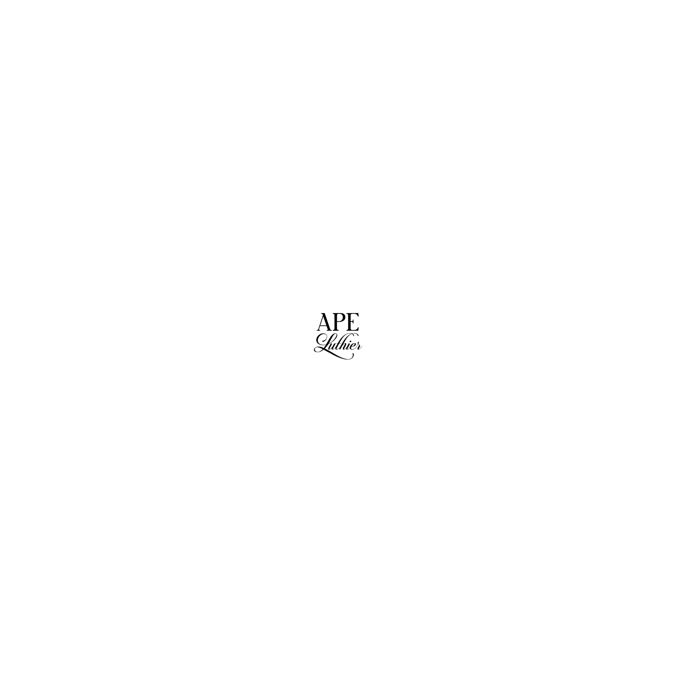
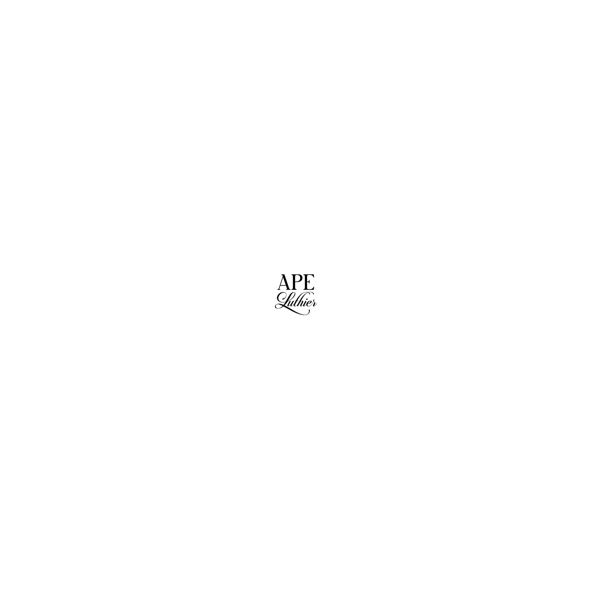

"Transformando madera en melodía."

"Transformando madera en melodía."
Soy César Vera, luthier de Mendoza, Argentina. Desde hace más de 10 años, transformo la madera en distintos instrumentos de cuerdas.
Me especializo en la construcción de instrumentos eléctricos, como bajos y guitarras, cuidando cada detalle para garantizar la mejor calidad.
Con la experiencia adquirida a lo largo de los años, también realizo mantenimiento de instrumentos ya construidos, ajustándolos según los requerimientos de
cada músico. Mi objetivo es asegurar que cada instrumento ofrezca un sonido excepcional y una experiencia de interpretación óptima.
Trabajo con dedicación y pasión para crear piezas únicas y personalizadas que reflejen la esencia y el estilo de cada músico, combinando tradición e innovación
en cada proyecto.